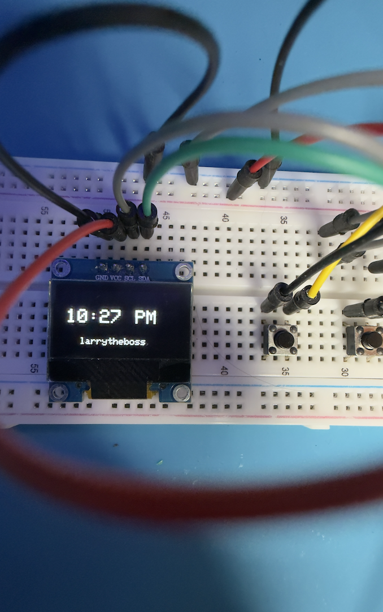

Long-Range Wireless Messaging Device
A pair of ESP32-based devices that send short preset messages to each other over WiFi and a cloud MQTT broker, each with an OLED display and physical buttons to trigger a message on the other unit — used long-distance between the US and Canada.
Click below to see the steps and flip cards →

Choosing the ESP32
I researched microcontrollers with built-in WiFi and chose the ESP32 because it has WiFi and Bluetooth onboard without needing a separate networking module. I added the libraries needed to connect the ESP32 to the OLED and WiFi.
Testing the Display First
Before building out the full circuit, I connected just the ESP32 and OLED to make sure the screen powered on and displayed correctly. I tested the display separately first so I could rule it out before adding the wireless connection.
Connecting the Two Devices
Each device connects to WiFi independently and communicates through a cloud-hosted MQTT broker. Both units publish messages to and subscribe to the broker, which allows them to communicate over the internet. Since my device is in the US and the second unit is in Canada, we couldn't rely on a direct local connection.
Wiring the OLED
I ran into an issue where the OLED wasn't receiving power. I spent some time researching the correct wiring for this specific display and eventually found a configuration that powered it reliably.
Button Logic
Each unit has physical buttons that trigger a preset message on the other device's display. Button 1 sends "I miss you," and Button 2 sends "I love you." Messages stay on the screen for 8 seconds and then automatically clear.
Elapsed-Time Counter
The second unit has a third button reserved for a custom feature: a persistent counter showing the elapsed time since a specific date.
Libraries & Code
I used Adafruit_GFX and Adafruit_SSD1306 to drive the OLED display, WiFi and WiFiClientSecure to connect the ESP32 to the network and open a secure connection to the broker, PubSubClient to handle the MQTT publish/subscribe messaging between the two devices, and time.h to sync and format the clock over NTP. The callback function fires whenever a message arrives on the subscribed topic, storing it and switching the display into message mode; the main loop checks the three buttons each cycle, publishes the matching message when pressed, and calls whichever display function matches the current state.